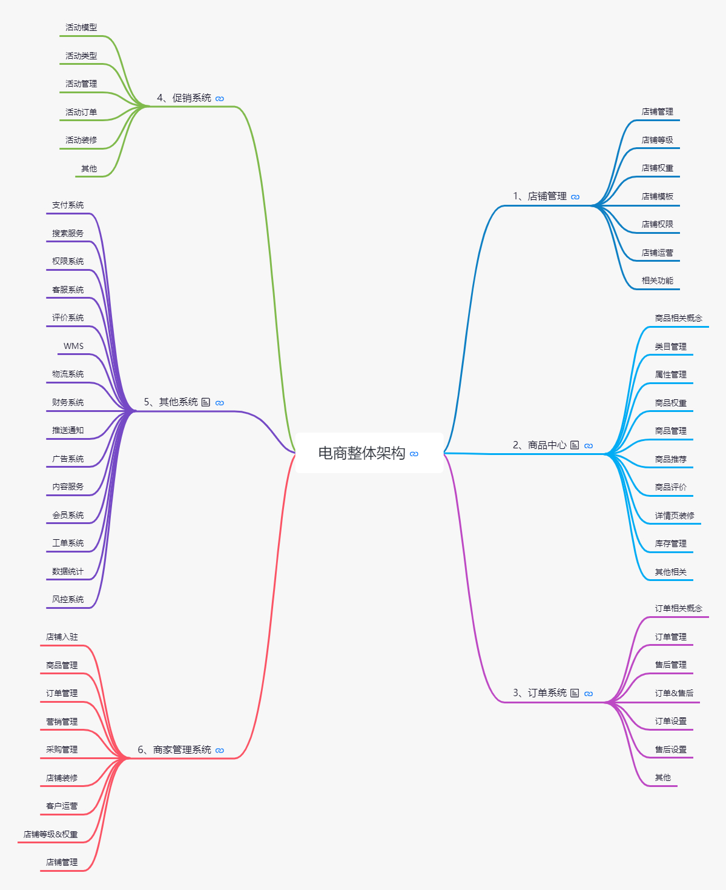
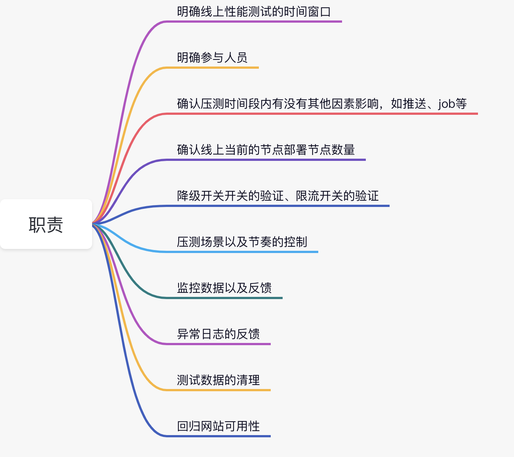

- 00 开篇词 为什么每个测试人都要学好性能测试？.md.html
- 01 JMeter 的核心概念.md.html
- 02 JMeter 参数化策略.md.html
- 03 构建并执行 JMeter 脚本的正确姿势.md.html
- 04 JMeter 二次开发其实并不难.md.html
- 05 如何基于 JMeter API 开发性能测试平台？.md.html
- 06 Nginx 在系统架构中的作用.md.html
- 07 你真的知道如何制定性能测试的目标吗？.md.html
- 08 性能测试场景的分类和意义.md.html
- 09 如何制定一份有效的性能测试方案？.md.html
- 10 命令行监控 Linux 服务器的要点.md.html
- 11 分布式服务链路监控以及报警方案.md.html
- 12 如何把可视化监控也做得酷炫？.md.html
- 13 Docker 的制作、运行以及监控.md.html
- 14 如何从 CPU 飙升定位到热点方法？.md.html
- 15 如何基于 JVM 分析内存使用对象？.md.html
- 16 如何通过 Arthas 定位代码链路问题？.md.html
- 17 如何应对 Redis 缓存穿透、击穿和雪崩？.md.html
- 18 如何才能优化 MySQL 性能？.md.html
- 19 如何根治慢 SQL？.md.html
- 20 结束语 线上全链路性能测试实践总结.md.html
20 结束语 线上全链路性能测试实践总结
作为专栏的最后一篇，我想和你聊聊线上全链路性能测试。全链路性能测试是一个非常热门的话题，不少公司也在摸索实践，这篇就以我的经验来谈谈对线上全链路性能测试的认知和实践的总结。
线上全链路性能测试提出的背景
按照我的认知，线上全链路性能测试是由阿里巴巴在 2012 年双 11 之后首次提出来的，因为当年的双 11 用户访问高峰时期系统成功率只有 50%，对于阿里同学来说，那应该是心情很沉重的双 11，复盘后发现其中的一块网卡被打满，在线下的性能测试环境中并没有发现这个问题。
为什么呢，说白了线下的压测理论上都是“缩容”测试，什么是缩容呢，就是服务器数量或者硬件配置是远低于线上的，规模容量是缩小了很多的。这导致了一些问题并不能充分被发现，实际访问量也不能很好被预估。在这样的问题背景下，线上的全链路性能测试就被提出来了。其实这和我开篇的一个观点是一致的，性能测试体系能够发展迅速，往往是公司各种大促的血泪史催化出来的，风险控制往往也能够带来最直接的生产力。
什么是线上全链路性能测试？
线上全链路性能测试就是基于真实的业务场景，实际线上环境，模拟多线程对各个业务链路进行压力测试的过程。
很多人提出了一个问题，有了线上全链路测试还需要线下性能测试吗？关于这个问题我也回答过，线上线下的性能测试理论上应当是互补的关系，线下往往权限充足而且不会对生产环境产生影响，可以发现更多的基本性能问题以及各类异常性能场景的测试，而线上是最真实的环境，对于性能验收的准确性至关重要。
什么样的情况适合全链路性能测试？
我并不认为所有的公司都适合直接进行线上性能测试，罗马不是一天建成，性能测试成熟的公司基本都经历了一段血泪史，是以一定的代价换的，对于线上全链路的开展我觉得需要几个前提：
1.已经在性能环境下进行过性能测试，但线上依然存在性能事故；
2.有频繁的促销需求，每次大促业务规则变化多；
3.对硬件成本较为敏感，需要进行容量测试，验证扩容缩容后的系统处理能力。
线上全链路性能测试聚焦的目的
相信你已经在线下进行过多轮的测试验证，线上的性能测试绝不是让你再去一遍遍执行发现基础的性能问题，线上性能测试的核心目的是验证系统的容量、部署结构的优化空间、整体线上的稳定性。
线上全链路性能测试实施重要前提
1.评估线上全链路压测的可行性
最核心要思考的点是能不能做到压测数据的隔离，所谓数据隔离你应该能够想到的就是数据库中压测数据不能跟真实的数据混在一起，从而无法区分，比如用户数据、下单商品数据等。通用的做法是先对数据进行打标，打标的意思就是做标记，比如压测数据都会有一个能够区别于真实业务的标识，比如加 header，比如用户名基于相同的 test 开头的标记，一般对于数据隔离的方案有两种。
（1）标记清理
第一种做法就是把标记的数据进行删除，一般在压测完成之后根据标识统一清理数据，所以做标记是一个重要前提，还有个前提是你需要整理清楚涉及哪些库表，有没有依赖关系，并且做到和开发以及 DBA 确认，这样删除数据更安全。
（2）影子库表
什么是影子库表呢？简单来说就是做一个和生产一样的库表，然后把压测数据加入影子库表，这样的做法相对于清理数据的方式，后期的事情会少一点，并不需要每次都一定要清理数据。这样的做法也有一些注意点，影子库表并不是仅仅建一个空的库表，它也需要你将生产数据迁移，还有这样的做法前期工作量会大一点，需要进行中间件改造自动识别压测流量才能进入影子库表。
这两种方式各有千秋，可以根据公司的业务特性做具体的方案落地。
2.对业务场景梳理
理清核心链路流程，线上有很多的接口，所谓线上的全链路性能测试也不会把所有的接口纳入测试范围当中。我的做法是先理清楚核心的业务模块，你必须要对你的业务模块有最基本的感知，哪些是核心模块，哪些是非核心，下面我罗列一个电商基本的业务模块图。

你可以看到仅文字描述的功能就已经非常多了，如果再去细分接口，可能一张图表都放不下。你首先要考虑的就是在这些模块中，哪些是不用进行全链路性能测试的，比如类似于商家管理系统，这本身是后台系统，并不直接面向用户。同样在你确定需要测试的性能模块中进一步确定哪些接口需要进行性能测试，关于细分到接口的选择我一般将大促时的访问数据进行参考，具体的方法[《07 | 你真的知道如何制定性能测试的目标吗？》]也有所提及。
3.理清数据传输链路
什么是数据传输链路呢？可以想象一下你在线下压测的场景，是不是内网环境从你的压测机就直接到服务暴露出的访问接口。而线上的链路可能远比这个复杂得多，比如数据是不是首先经过防火墙、硬件层的负载均衡等，你需要把这些链路也理清楚，说白了就是要理清线上的部署架构。这也是性能测试需求分析的步骤，防火墙之类的底层结构是不会轻易变动的，但对于线上实际的应用部署节点可能变动就很多了，我们会针对不同的应用节点部署结构和数量经常调整，所以在压测之前需要前置好这些条件并记录清楚。
线上全链路性能测试实施要点
首先需要表明一些观点，很多测试人员在实际测试过程中要么是自己造数据构造场景，如果遇到一些需要开发配合的可能会被直接打回，在线上的全链路性能测试过程中可以说系统改造是必需的，线上全链路性能测试也是多团队协作完成的，并不是测试人员的“独角戏”。
很多测试同学在进行线下性能测试时，几乎是一个人完成所有的活动，包括编写脚本、压测、监控、分析等等。在开展线上全链路的时候，可能会把这一套也继续沿用，这其实是一个误区，我认为线上的性能测试相对于线下至少有三个特性。
1.时间敏感
怎么理解时间敏感呢？线上的性能测试一般都需要申请窗口期，并不是你个人决定压测就可以直接进行了，一般来说，绝大部分公司都是选择在凌晨进行，这样对实际用户的影响最小。就以测试同学来举例，线上的性能测试也有很多准备工作，测试之前会有很多试验性的工作，比如商品数据是否有效、用户 token 是否过期。一旦进行正式的压测环节，一般需要按照时间去分解任务，遇到问题讲究快速解决，需要最正确的人去做相关的任务协同，比如哪些服务集群、哪些中间件需要哪些人去监控，在有效的时间内以达到最高效率。
2.权限敏感
权限敏感很好理解，说白了你作为测试不可能像在性能测试环境一样具备充足的权限，比如可以在性能测试环境随时重启服务，增删改查数据等。作为测试在线上你不可能有这些权限，所以线上的性能测试并不是你可以自由发挥的。
3.高风险
说到高风险，通过其他两个特性也能看出来，如果风险不大，时间和权限自然也就没这么敏感了，所以基于风险较高，我们在线上全链路性能测试执行的时候，更希望有一个“项目经理”的角色，进行人员安排、任务同步、风险预警等，这样的角色需要深入了解性能流程以及系统的风险控制。
测试人员可以扮演的角色？
1.全链路性能测试执行者
作为一名测试执行者，你需要更关注测试本身的内容，那测试本身的内容有哪些呢？我以电商网站为例来说明，根据每家公司的业务或者体量的不同，具体的事物会有差别，但一些思路是可以借鉴的：
- 压测机环境准备，压测机分布式节点检查；
- 压测数据准备和检查，如会员数据、商品下单数据；
- 参数化文件切割；
- 脚本以及参数化文件分发；
- 测试场景执行以及指标收集和记载。
2.线上全链路测试的“项目经理”
我刚刚也说了线上的性能测试需要一名“项目经理”，很多人思维定式认为这位项目经理需要一定级别的 leader 来担任，其实并不完全是这样。以我的思路来看，性能测试一线经验丰富的同学来承担更适合，当然这位同学不仅仅需要性能经验丰富，也需要对架构以及业务有基本盘的认知，至少做到心中有底。
如果作为一个线上全链路压测实施的“项目经理”，你需要组织什么事情呢？我用一个思维导图罗列下。

线上全链路测试的风险
对于很多公司还是很忌惮在线上直接开始性能测试，因为觉得这样做风险太大了。这个担心是有道理的，阿里巴巴在刚刚提出这个议题时，内部也有很多不同的声音，一旦性能测试导致线上系统出现故障，轻则影响用户体验，重则系统不可用、真金白银的损失，任何人都不想为这个测试风险而买单。
虽然文章中列举了很多事项和注意点，但真正实施起来还是可能会遇到问题，所以线上性能测试的手段也是需要被测试的，比如先基于单条数据的打标、隔离、清理等，而且更需要的是发散性思维去思考，能不能把相关问题都考虑全面了，比如我之前的举例，对数据库进行数据隔离，那你有没有考虑到如 ES 数据、日志数据是否也需要做到有效的隔离呢？
监控预警
在线上全链路压测过程中，报警是非常重要的，出现意外情况可以及时终止压测，防止造成额外损失。报警的规则也是需要严格制定的，硬件的、系统的、业务的，包括响应延时等都应当设置相关的阈值等，第三模块有非常详细的描述，相信你应该对监控已经比较熟悉了。
总结
线上的全链路性能测试并不是高不可攀的技术，虽然有一定的技术门槛，但真正运作起来其实考验的是组织能力，线上全链路性能测试我认为是在线下专项性能测试上做的升级。这篇也是本专栏最终的收尾了，希望你能有所收获。
虽然本专栏已经结束了，但是后续我仍然会在微信公众号（软件测试架构师俱乐部）发表更多的知识，欢迎你来关注。